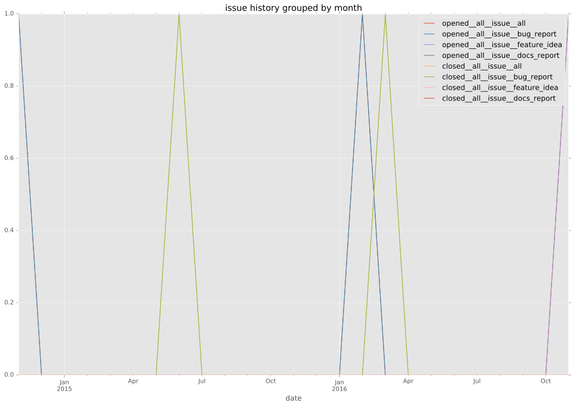

total issue counts
bugfix pull request: 6
pullrequest: 11
docs pull request: 1
feature pull request: 4
issue: 2
bug report: 2
issue history

days open by issue type
feature pull request
count: 5
std: 103.258413701
min: 18
max: 255
median: 26.0
mean: 70.4
all
count: 18
std: 73.3974986662
min: 0
max: 255
median: 10.0
mean: 34.6111111111
pullrequest
count: 0
std: nan
min: nan
max: nan
median: nan
mean: nan
docs pull request
count: 1
std: nan
min: 5
max: 5
median: 5.0
mean: 5.0
bugfix pull request
count: 10
std: 5.96377956221
min: 0
max: 15
median: 1.0
mean: 3.7
issue
count: 0
std: nan
min: nan
max: nan
median: nan
mean: nan
bug report
count: 2
std: 137.885822331
min: 17
max: 212
median: 114.5
mean: 114.5
closures grouped by total days open